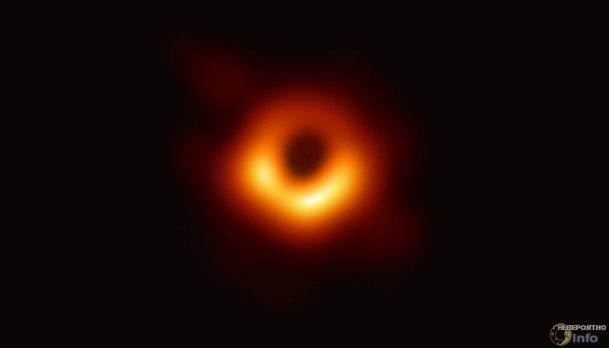

НОВОСТИ
Первая в мире фотография черной дыры

Ученые Европейской южной обсерватории представили первые фотографии горизонта событий черной дыры, находящейся в центре галактики М87.
О результатах работы, проделанной с помощью глобальной сети телескопов, названной Event Horizon Telescope, астрономы рассказали на пресс-конференции Европейской комиссии и Европейского исследовательского совета.
Исследователи получили изображение «тени» черной дыры — темной области на фоне излучения, соответствующей горизонту событий. Этот объект располагается в галактике на расстоянии 53 миллиона световых лет от Земли. Кроме того, ученые пытались также получить фотографию компактного радиоисточника Стрельца A*, находящегося в центре Млечного пути и также являющегося черной дырой.
В Event Horizon Telescope входят восемь обсерваторий по всему миру, которые, по словам астронома Майкла Бремера (Michael Bremer), все вместе действуют как один телескоп диаметром 10 тысяч километров. Это позволяет значительно увеличить разрешение получаемых снимков и уровень их детализации.
20-21 января: суперлунное затмение

Первое из трех суперлуний в 2019 году — когда полная луна находится ближе всего к Земле на своей эллиптической орбите и, следовательно, оказывается максимально большой для наблюдателя — произойдет в январе и совпадет с полным лунным затмением в некоторых частях мира, окрашивая наш спутник в темно-красный цвет, когда он будет проходить позади тени, отбрасываемой Землей. Затмение будет видно по всей Северной и Южной Америке, а также в самых крайних западных частях Европы и Африки. Второе суперлуние этого года состоится 19 февраля, а третье — 21 марта.